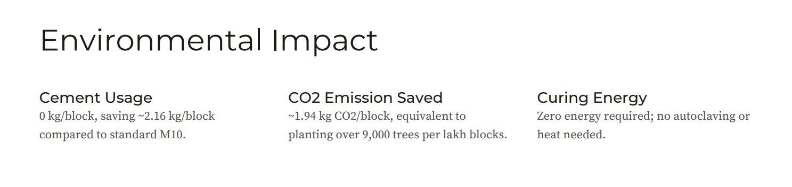
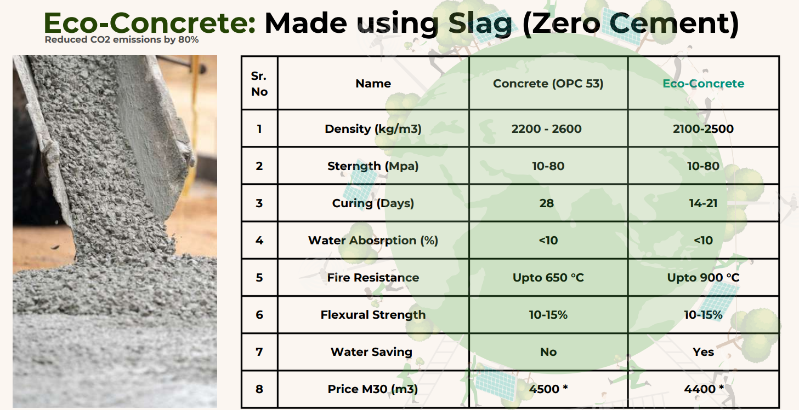
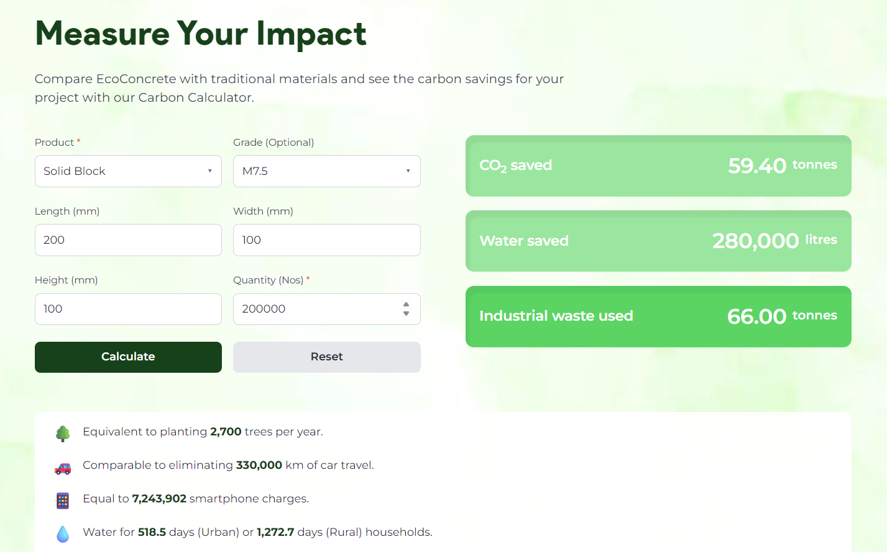
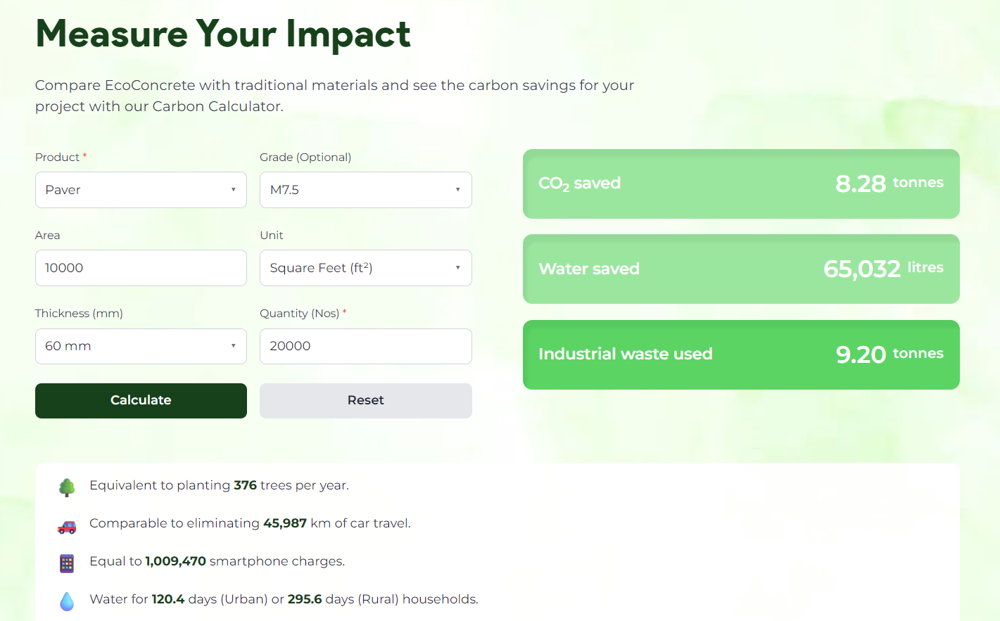
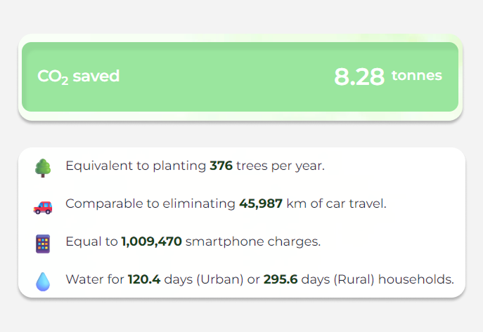
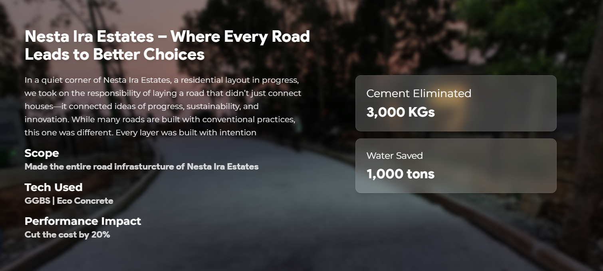

Web design & build · live
EcoPath
A startup decarbonizing road construction with cement-free concrete, and a website built so its single hardest job, proving the impact, happens in the visitor's own hands.

- Timeline
- July 2025 to Dec 2025
- Role
- Full-stack developer, UX & UI designer
- Platform
- Web
- Process
- Empirical research, socio-technical discovery, requirement analysis, service mapping, high-fidelity prototyping, empirical usability testing
- Tech stack
- Django · Figma · Tailwind CSS · Google Materials · HTML · CSS · JavaScript
Overview
A company whose product is invisible until you can measure it
EcoPath builds roads and concrete products without cement, cutting the carbon, water, and waste of construction by a large margin. I designed and built its website end to end. The brief sounds like a normal marketing site, but it hides a difficult problem: the product's value is an environmental number, and numbers do not sell themselves. The work was about making that number believable and felt, not just stated.
The problem
Green is an easy claim and a hard sell
Every construction supplier now claims to be sustainable, so the word has lost its weight. EcoPath's savings are real and large, around 75 to 80 per cent less CO2 than traditional concrete, roughly 30 per cent less water, and over ten thousand tonnes of industrial waste reused. But a developer reading those figures has two fair questions the brand has to answer before a sale: can I trust this, and what would it actually mean for my project. A page of bold percentages answers neither.
Research
How a buyer actually judges a sustainability claim
This was desk and category research rather than user interviews, so I am describing what shaped the design, not invented findings. Two things drove the decisions.
Credibility comes from specifics. Industrial buyers discount round marketing numbers and trust concrete evidence: named projects, real clients, third-party recognition, and figures tied to a real job. EcoPath had all of these, so the site had to foreground them rather than adjectives.
Abstract figures do not move people. A quantity like twelve tonnes of CO2 is meaningless to most readers because they have no reference for it. The research pointed toward translating impact into units people already understand, which became the core idea of the calculator later.


Audience
Three buyers, three different questions
The site speaks to distinct buyer types, and each arrives with a different first question. These are grounded in EcoPath's real clientele, not interviewed personas.
Residential developer
Building a layout or estate. Asks: will this look and last as well as conventional roads, and what does it cost me?
Commercial & infra
Larger projects and institutions. Asks: can one vendor handle the whole road, at scale, on time?
Government & ESG-led
Public or sustainability-mandated buyers. Asks: can the environmental impact be quantified and defended?
Information architecture
Separating what you buy from what you hire
The key structural decision was to stop treating EcoPath as one thing. It sells cement-free products, ready-mix EcoConcrete, pavers, bricks and blocks, precast units, and it provides services, like soil stabilisation and building an entire road. Those are two different intents: buy a material, or hire a contractor. Folding them together would force every visitor through the half that did not apply to them.
So Products and Services got their own dedicated pages, grouped under a What We Do menu with a separate Our Projects page carrying the proof. Each visitor self-selects in one click, and each offering gets room to be explained on its own terms.
The impact calculator
Turning tonnes into trees
The calculator is the centre of the site, and the answer to the problem the research surfaced. Rather than tell a visitor that EcoConcrete saves carbon in general, it lets them describe their own project and shows what it would save in particular.
A visitor picks a product, a solid block, paver, kerbstone, saucer drain, U-drain, precast slab, boundary wall panel, or precast road, optionally sets a grade from M7.5 to M40, enters dimensions and quantity, and calculates. It returns three figures against the traditional equivalent: CO2 saved, water saved, and industrial waste reused.


The design decision
From a number nobody feels to one they do
The first instinct was to show the raw savings and stop there: so many tonnes of CO2, so many litres of water. Accurate, and almost inert. A developer reading "twelve tonnes of CO2" has no felt sense of whether that is a little or a lot.
The reframe was to express the same figure in units people carry intuition for: trees planted in a year, kilometres of car travel avoided, smartphone charges, and days of household water for urban and rural homes. Nothing about the underlying number changes. What changes is whether the reader feels it. That single translation is what turns the calculator from an information widget into something persuasive, and it is the design idea I am most pleased with.

Build
Keeping a data tool simple on the surface
The site runs on Django with a Postgres database, and Tailwind, HTML, and CSS on the front end. The calculator's per-product emission, water, and waste factors live on the backend, with the form and live results on the front end, so the visitor sees a few simple inputs while the comparison logic stays hidden. The wider site is a full build: the dedicated products, services, and projects pages, sustainability, about, a blog, and contact, with optimised imagery for performance.
Quality
Making the numbers trustworthy
For a tool whose whole value is being believed, the quality bar is accuracy and clarity: the calculator's outputs have to be right and legible, and the site has to hold up responsively across devices and stay fast despite heavy imagery. That was the focus of testing.
Impact
Recognition, and roads on the ground
EcoPath was named a TiE50 2026 winner, recognised among the top fifty startups globally for its work decarbonizing construction. The site backs that standing with delivered projects rather than promises. These are EcoPath's company achievements, which the website is built to represent and support.
Nesta Ira Estates
Entire road infrastructure for a residential layout, using GGBS and EcoConcrete.
- 20%
- cost cut
- 3,000kg
- cement removed
- 1,000t
- water saved
CoEvolve Estates
Durable internal roads in Whitefield, Bangalore, via soil stabilisation and waterproofing.
- 20%
- cost cut
- 500kg
- cement removed
- 100t
- water saved

Reflection
What I would carry forward
Building the EcoPath platform was a deep dive into the sustainable construction industry. To make the site
effective, I had to really understand green certifications and how the market actually works. I learned how
to do highly targeted research, compile content reports, and pull the right visual inspiration to make sure
the website felt as grounded and solid as the physical concrete they pour.
My biggest takeaway was learning how to take raw, complex client data and turn it into something
interactive. It is one thing to have a spreadsheet of emission factors, but figuring out how to transpose
those abstract requirements into a living, breathing functionality—like the impact calculator—was a huge
learning curve. Ultimately, this project taught me how to organize heavy technical information so that the
end user easily understands and trusts it.